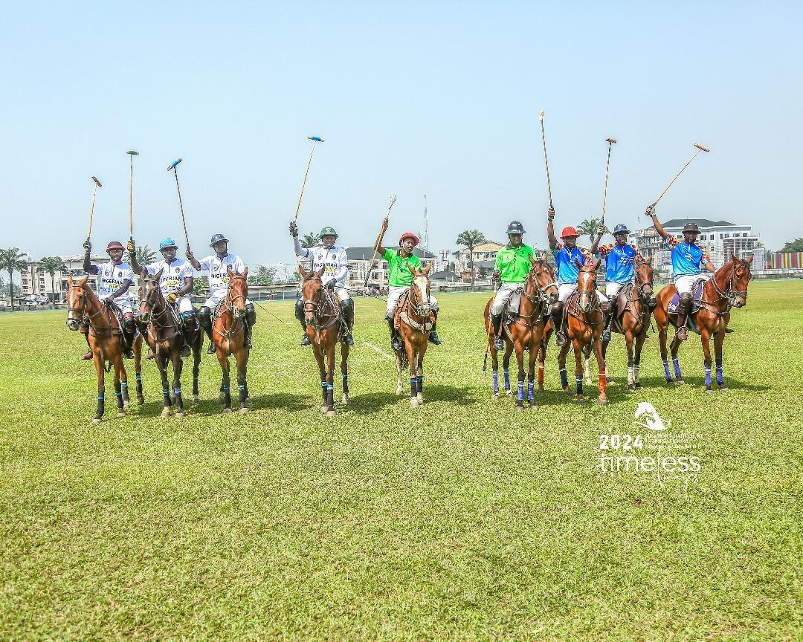
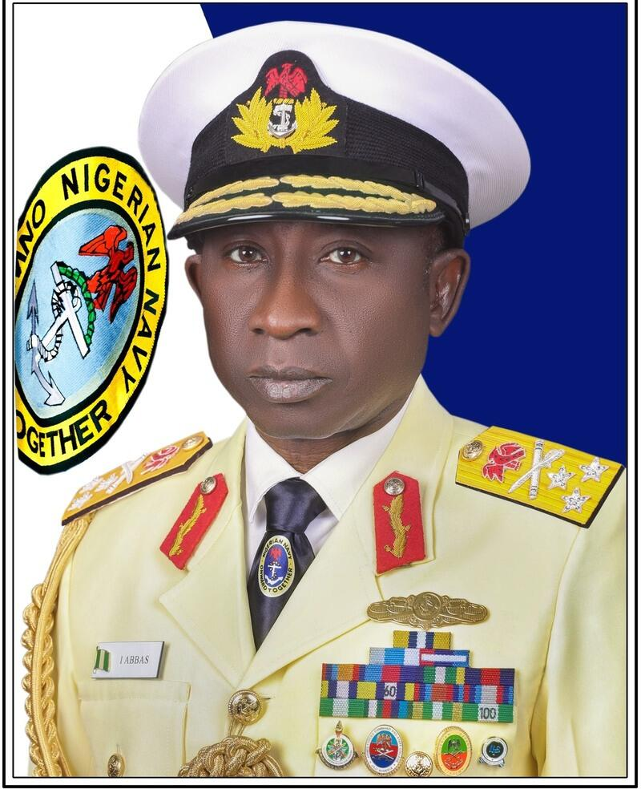
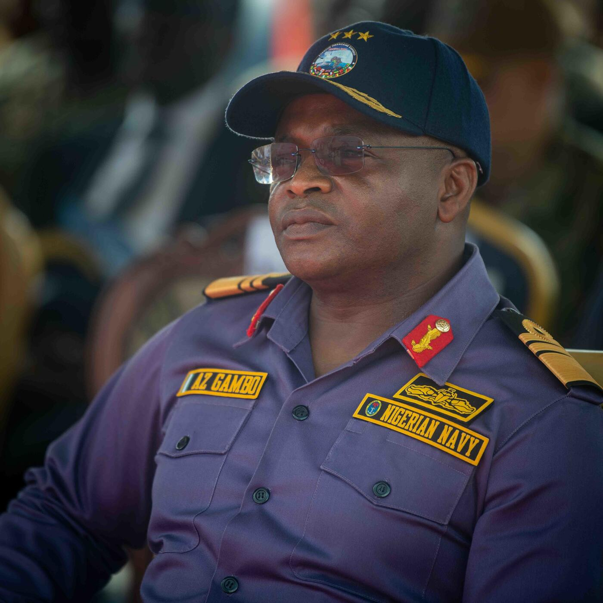
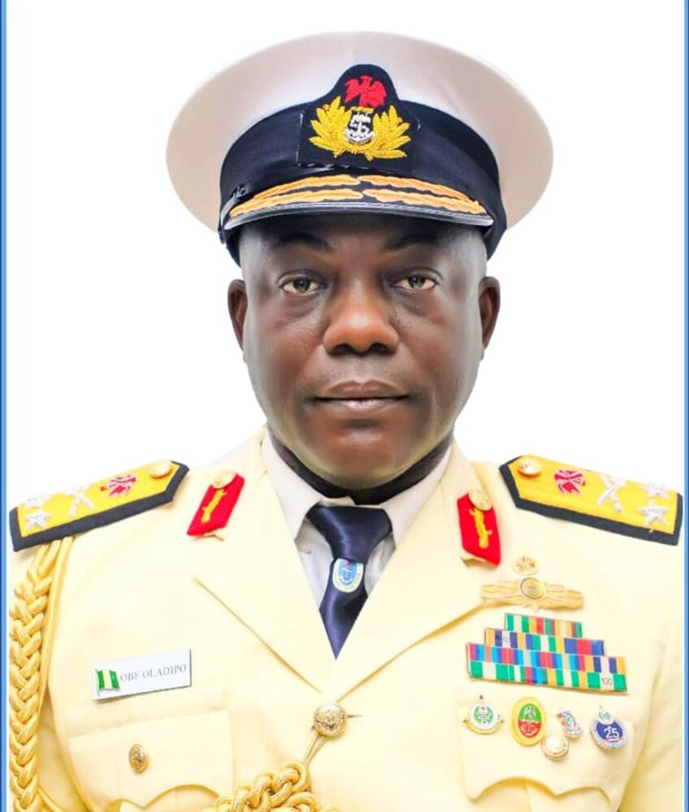

Discipline of the Fleet,
Spirit of the Field.
The Nigerian Navy Polo Team brings together serving officers, veterans and members of the polo community under one mandate: sportsmanship, camaraderie, and the naval tradition of excellence — on horseback.
A tradition carried from the wardroom to the field
The Nigerian Navy Polo Team was formed to preserve and grow the sport of polo within the Naval community, extending the same values of precision, teamwork and command that define service at sea.
Membership is open to serving and retired naval officers, their families, and civilian polo enthusiasts who share our commitment to the sport's traditions. We organise regular chukkas, coach emerging players, and represent the Navy at national and international tournaments.
Discipline
Naval precision brought to every chukka, every match, every season.
Excellence
Coaching and competition pathways for players at every level.
Camaraderie
A fellowship of officers and civilians united by the field.
Milestones on the field
From its founding chukka to national recognition — the story of the Team is written year by year.
Introduced to the Game
The Nigerian Navy was introduced to polo by the Nigerian Army's 21 Guards Brigade Polo Club, and the Nigerian Navy Polo Team was formally established under the tenure of then Chief of Naval Staff, Vice Admiral Awwal Zubairu Gambo, to build camaraderie, sportsmanship, and discipline through the game.
First Trophy — The TY Danjuma Cup
In its maiden appearance at the Port Harcourt International Polo Tournament, the Navy team won the prestigious TY Danjuma Cup — the young team's first trophy.
Trophy Cabinet Grows
The Navy team returned to Port Harcourt to successfully defend the TY Danjuma Cup and added the O.B. Lulu Briggs Cup, fielding two strong teams in the tournament.
70th Anniversary Novelty Match
The team marked the Nigerian Navy's 70th anniversary with a polo novelty match at the Guards Polo Club in Abuja, part of celebrations honouring seven decades of naval service. Team NNS Aradu was crowned champion on the day.
Upcoming matches
Match dates and venues for the current season. Entry status updates as tournaments approach.
| Date | Fixture | Venue | Entry |
|---|
From the club house
Lagos MSD Babybear Wins the CNS Cup at Lagos Polo Club Tournament 2025
The final of the Chief of the Naval Staff (CNS) Cup at the 2025 Lagos Polo Club Tournament was played on 22 February 2025, with Lagos MSD Babybear defeating Ibadan Durante 6–3. The CNS, Vice Admiral Emmanuel Ikechukwu Ogalla, was ably represented by the Command Staff Officer Western Naval Command, Rear Admiral SD Ibrahim, who presented the trophy and emphasised the CNS's continued commitment to investing in sports to enhance the physical and mental well-being of Nigerian Navy personnel and to promote the prestige of the organisation. He was accompanied by the Chairman of the NN Polo Team, Rear Admiral OBF Oladipo, Command Information Officer Western Naval Command Commander A Ahmed, NN Polo Team member Lieutenant Commander AOS Ogunshola, Managing Director of Messi Ocean Mr. Kunle Aluko, and Mr. Wilson of Wilson Aviation.

Navy Wins the Chairborne Cup at Port Harcourt 2024
The Nigerian Navy Polo Team topped a 10-team field to win the Chairborne Cup at the 2024 Port Harcourt International Polo Tournament, held 14–21 January. See more from the tournament in the Gallery.
Registration Opens for the Navy Cup
Members can now register teams for the season's opening tournament. Deadline applies for kit sizing and mount allocation.
New Coaching Clinic for Junior Members
A structured coaching programme begins this quarter for junior and beginner members across all chapters.
Navy Marks 70th Anniversary with Polo Novelty Match
The Nigerian Navy added polo to celebrations for its 70th anniversary with a novelty match at the Guards Polo Club in Abuja. Team NNS Aradu emerged champions on the day, with former Chief of Naval Staff Vice Admiral Awwal Zubairu Gambo — who established the Navy's polo team in 2021 — commending the occasion.
Patron, Pioneer, Chairman & Captain
The individuals who provide direction and leadership for the Team.

Vice Admiral I Abbas
AM · DGSM · GSS · psc · fdc · MSc · MNIM
Chief of the Naval Staff
As Patron, Vice Admiral I Abbas provides guidance and support for the Nigerian Navy Polo Team, upholding a tradition of discipline and excellence carried from the parade ground to the field of play.

Vice Admiral Awwal Zubairu Gambo (Rtd)
CFR · psc · AM · GSS · ensp(RSA) · MTM · MNIM · MUSNI · FCIS · FIIPS · FCAI
Pioneer President
Vice Admiral Awwal Zubairu Gambo established the Nigerian Navy Polo Team in 2021, laying the foundation for the Team's tradition of discipline and excellence on the field of play.

Rear Admiral Olugbenga Bidemi Oladipo
FSS · psc · MSS · FDC · DSS
Chairman, Nigerian Navy Polo Team
Captain Armayau Yusuf
Team Captain